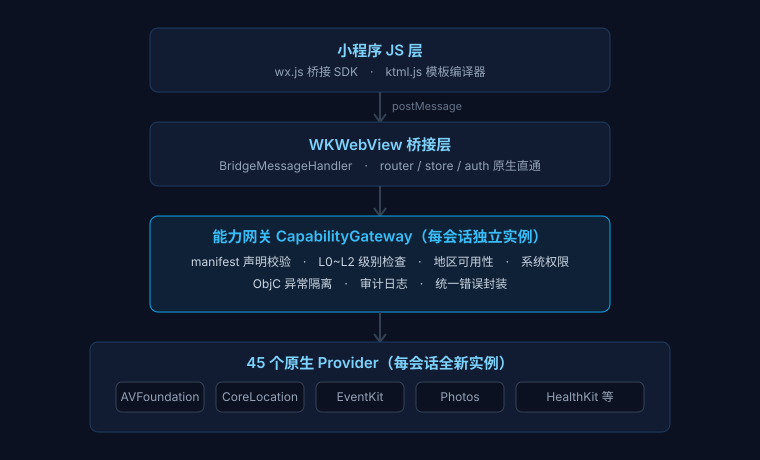

不是简单的 JS 沙箱，而是有边界的能力执行平台。声明、分级、权限、隔离、审计构成完整的治理链路。
声明校验、L0/L1/L2 分级、地区与系统权限检查、ObjC 异常隔离，每个会话独立实例，杜绝状态串扰。
每项能力都必须在 manifest.json 中声明，未声明调用被拒绝并返回 capability_not_declared。
column / text / for / if 声明式组件，支持数据绑定与自动 HTML 转义，兼顾 HTML 与模板两种写法。
同一设备并行运行多个应用实例，各自独立的能力网关与会话状态，彼此互不干扰。
多源聚合、版本比较、SHA256 校验与下载，支持静态商店源与付费小程序。
基于 OpenAI 兼容接口，用自然语言生成小程序包并迭代修改，降低从想法到上架的门槛。
每个按钮 = 一次 模块.方法 调用，经网关卡点校验后由对应 Provider 调用原生框架。
正在加载能力清单…
从页面脚本到原生框架，每一层职责单一、边界明确，异常在网关处被隔离，不会拖垮宿主。

演示 Kinter 小程序通过 wx.audio / wx.music 调起系统原生音频播放器的能力。基于 AVAudioPlayer，支持后台播放。下方测试音乐由开发者本人独立制作，仅用于展示音频播放能力。
声明能力后即可直接调用原生接口，Promise 风格统一错误处理。
{
"appId": "com.example.hello",
"version": "1.0.0",
"pages": ["index"],
"capabilities": {
"deviceInfo": { "level": "L0" },
"files": { "level": "L0" }
}
}
// 声明后直接调用原生相机 wx.chooseImage({ count: 1 }) .then(res => { console.log(res.tempFilePaths) }) .catch(err => { console.error(err.code) })